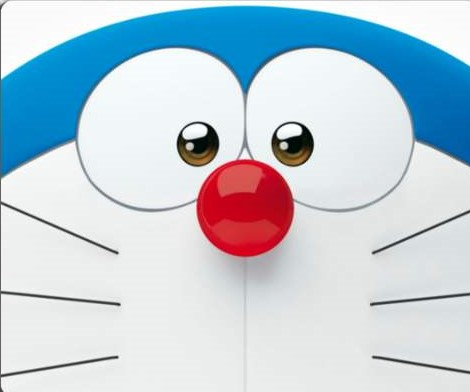

| 哆啦A梦 |
|  |
| 《哆啦A梦》（日语：ドラえもん；英语：Doraemon；旧译叮当 / 小叮当）是由日本漫画家藤本弘（笔名藤子·F·不二雄）创作的漫画。 漫画叙述了一只来自22世纪的猫型机器人——哆啦A梦，受主人野比世修的托付，回到20世纪，借助从四维口袋里拿出来的各种未来道具，来帮助世修的高祖父——小学生野比大雄化解身边的种种困难问题， 以及生活中和>身边的小伙伴们发生的轻松幽默搞笑感人的故事。 作品自1970年1月开始在《小学1-4年级生》杂志中开始连载，并且大受小学生欢迎。《哆啦A梦》系列的篇幅浩繁，由原作者亲自执笔的短篇漫画共1345回 （分为45卷单行本），大长篇漫画16回，《哆啦A梦Plus》6卷，在藤本弘去世后，又由其弟子创作了大量漫画，至今仍有新作品在不断推出。 |
| 人物 |
| 道具 |
| 伴我同行 |
| 注册 |